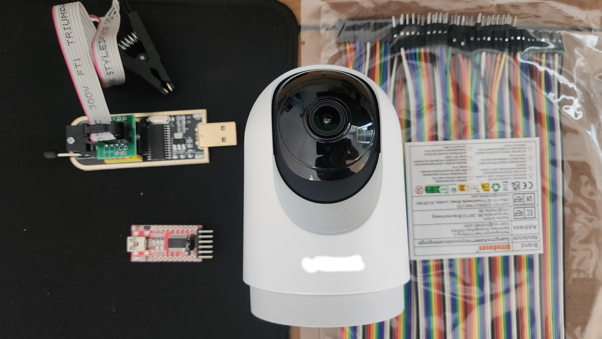
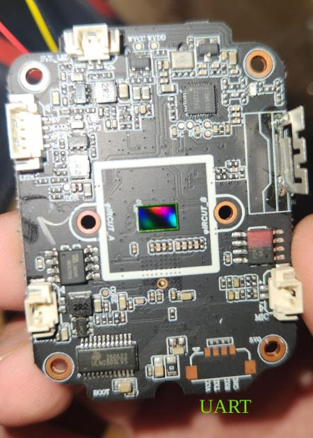
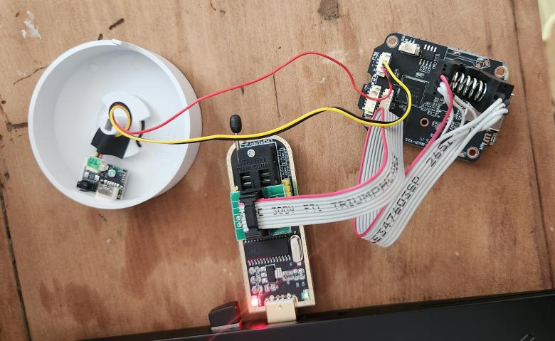

+==================================================================+ | | | H A R D W A R E T E A R D O W N :: file 0x01 ; camera | | | +==================================================================+
This small writeup describes how I pentested a cheap cloud-based IoT camera I bought on Amazon (~€20). I did it entirely for educational purposes, to sharpen my skills in hardware and IoT security.
The goal I set myself: see how locked down a €20 cloud camera really is, and whether I can make it run locally, with a plain RTSP stream on my LAN, no vendor app, no cloud, nothing leaving the network. This is Part 1 (recon, teardown, firmware). The de-clouding itself will be Part 2, once I've soldered the UART for an interactive shell.
0x01 The device
A small pan/tilt "smart" camera, the kind of anonymous white-label unit that ships in a plain box and forces you through a vendor app and its cloud. Opening it up and reading the boot log gave me the platform:
| Component | Value |
|---|---|
| SoC | Anyka AK3918AV130_B, ARM926EJ-S (ARMv5TEJ), 960 MHz |
| RAM | 64 MiB |
| Flash | Zbit ZB25VQ64, SPI NOR, 8 MiB |
| Kernel | Linux 4.4.302-cip94 (Buildroot 2018.02) |
| Userland | BusyBox |
| Wi-Fi | AltoBeam, over USB (007a:6162) |
| Bootloader | U-Boot 2019.10.0 |
| App | gv_ipc v10.1.52 (vendor-branded) |
It also has an NPU (on-board motion/AI) and a ULN2803 driving the pan/tilt motors, both visible on the board.

0x02 Check for open ports
My first idea was to check for open TCP or UDP ports with nmap. IoT products usually expose services such as ssh, telnet or ftp, which are great entry points to attack a device. An ssh or telnet access gets you a shell on the target, and from there you can try to escalate to root.
So I scanned the full TCP range:
$ nmap -Pn -p- <CAM_IP> # all 65535 ports -> closed (clean RST, every time)
Every single one of the 65535 ports came back closed. Not filtered, but closed, with a clean RST each time, which means the network stack is alive and actively refusing, not a firewall silently dropping packets. No ssh, no telnet, no ftp, no web interface. Nothing.
UDP looked more promising for a moment: a top-ports scan flagged a handful as open|filtered. But in UDP that status just means no reply came back, not that the port is open. I re-ran it slowly (--scan-delay 1s) to rule out the kernel's ICMP rate-limiting, and every one of them turned out closed. mDNS, SSDP and WS-Discovery: silent too.
So the "classic entry point" plan died immediately: there is no service to attack, because the camera listens on nothing. It's a pure client that only ever dials out, opens a tunnel to the vendor cloud, and does live view through P2P hole-punching. None of that shows up to a port scan. That's the interesting part: the network attack surface is basically zero, and the real exposure has moved entirely to the cloud link and the P2P layer. Both are the vendor's infrastructure, out of scope here, so I only watched them passively.
Passively, the traffic matched that story: idle, just a keepalive trickle; live view from a phone on the same Wi-Fi kept WAN upload flat, so the stream stayed local. No steady upload at rest either, so the camera isn't recording to the cloud 24/7.
With no way in over the network, the only way forward was to open the thing up.
0x03 Hardware teardown
The board has an unpopulated UART header, silkscreened VCC / TXD / RXD / GND, plus a BOOT pad. 3.3 V logic, 115200 8N1. The console is not locked and autoboot can be interrupted with Ctrl+C.

For now I've only tapped it read-only (TXD + GND) to capture the boot log. An interactive shell needs the RXD line soldered, which is Part 2. The boot log gave me the whole platform:
U-Boot 2019.10.0-V4.0.27 (Dec 13 2025)
Model: EVB_CBD_AK3918AV130_V1.0.0
Flash: ZB25VQ64, SPI NOR, 8 MiB
Kernel: Linux 4.4.302-cip94 (Buildroot 2018.02)
cmdline: root=/dev/mtdblock3 rootfstype=squashfs
mtdparts=spi-nor:256k(uboot)... <- corrupted (serial noise)
Pipeline: ak_isp -> ak_venc_adapter -> ak_venc_bridge (+ ak_npu)
WiFi: AltoBeam over USB (007a:6162)
App: gv_ipc v10.1.52 "device_id_decryption: v1.0.0"
The partition string is cut off by serial noise, so I'll get the full MTD map from cat /proc/mtd once I have a shell. Two things already stand out: device_id_decryption runs at boot (the cloud pairing logic), and the video path is right there in the driver load order, with ak_isp feeding ak_venc. That encoder is what Part 2 has to tap to get a local stream.
0x04 Dumping the firmware
Instead of waiting on the soldering, I read the flash straight off the board: SOIC-8 clip on the ZB25VQ64, CH341A programmer. I powered the board from its own supply (never the clip) and dumped three times, comparing SHA-256 to make sure the read was clean. All three matched, exactly 8 388 608 bytes.

binwalk carved two SquashFS images: a main rootfs and a separate app filesystem mounted at /app, where the vendor's own code lives, cleanly split from the BusyBox base.
The first thing I went for was the root password. /etc/shadow held the root hash, which I cracked offline with John the Ripper. It's an $1$ hash, MD5-crypt, the legacy algorithm with no real work factor, so it falls quickly. The password itself isn't the interesting part: what matters is that the hash ships inside the firmware image. Every unit built from the same firmware carries the same one, so the root password is effectively identical across the whole product line and every rebranded twin of this camera. (Not published here.)
That's as far as I'll take the firmware in Part 1. The rest of what the dump contains, what the app actually talks to and whether the camera can be made to stream locally, is the subject of Part 2.
0x05 Findings
| # | Finding | Sev |
|---|---|---|
| F1 | UART console left enabled, root shell reachable, autoboot interruptible | High |
| F2 | Root password recoverable from firmware, likely shared across the product line | High |
| F3 | No secure boot / no firmware signature check; a modified image reflashes and runs | High |
| F4 | Provisioned Wi-Fi SSID and password stored in cleartext in a writable flash partition, recoverable from a dump | Medium |
| F5 | Whole trust model depends on the vendor cloud; no local control by default | Medium |
So, how locked down is a €20 cloud camera? Over the network, surprisingly tight: nothing listens, there's no service to hit. But that's the only thing protecting it. With the hardware in hand it falls apart fast, with an open debug console, a root password sitting in an unsigned firmware, and probably the same password on every unit of the model.
0x06 Next: Part 2
Solder the RXD line, get a root shell, and dig into the app filesystem properly: what the camera talks to, how the video pipeline is wired, and whether it can be turned into a plain local RTSP stream with the vendor cloud cut off. That's the whole de-clouding story, and it's Part 2. I also plan a responsible-disclosure note to the OEM/CERT once the findings are confirmed.